The examples below are meant to showcase HiGlass's capabilities as a contact map explorer as well as to point out loci of interest.
-
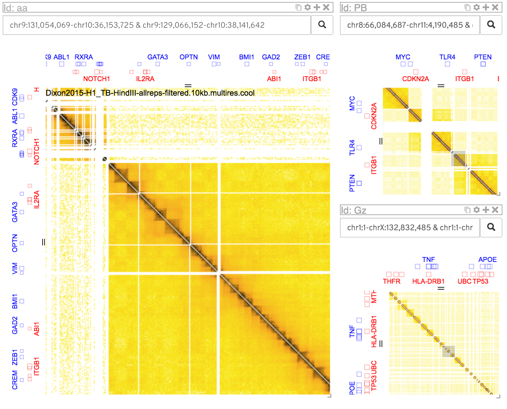 Showing where the one view located by showing its position in another view
-
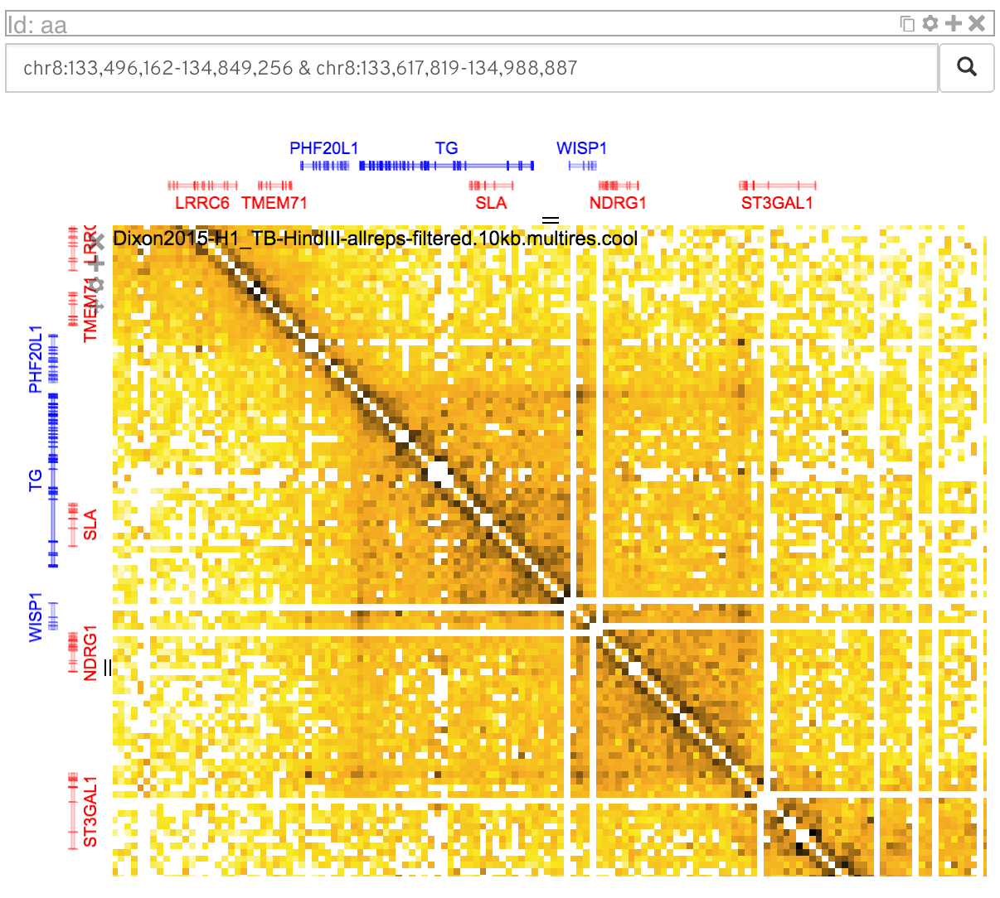 One view showing the WISP1 locus
-
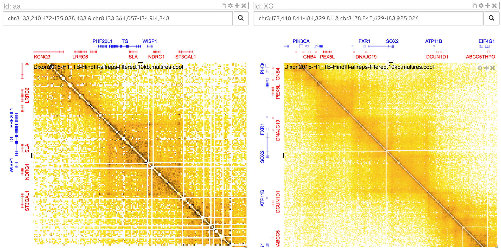 Two indepedent views showing different loci (WISP1 and SOX2)
-
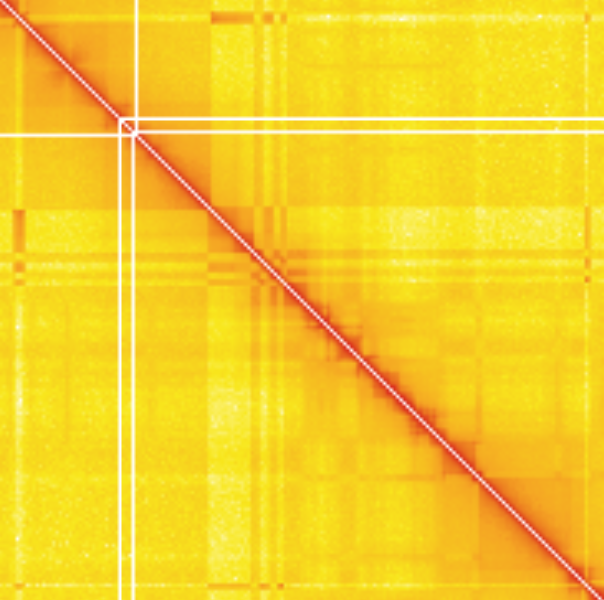 A very stark example of a compartment which isn't present in other cell lines.
-
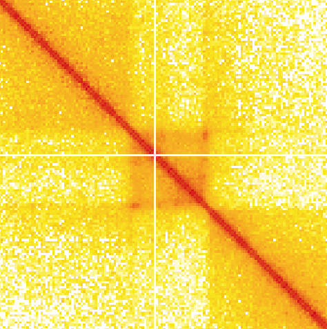 Compartments with loops.
-
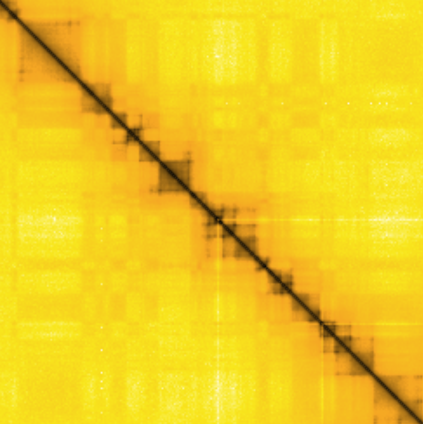 Default color map
-
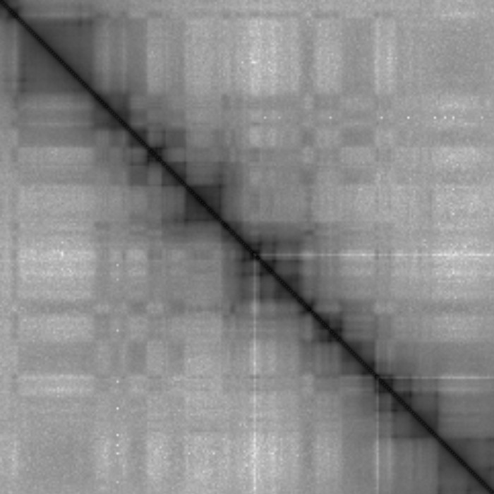 Greys color map
-
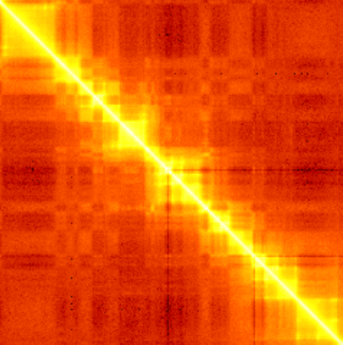 Hot color map
-
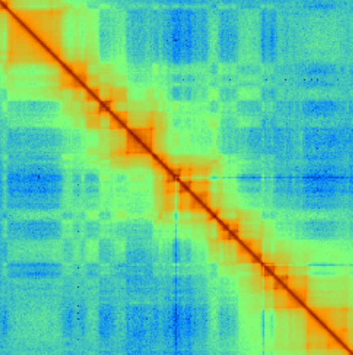 Jet color map
-
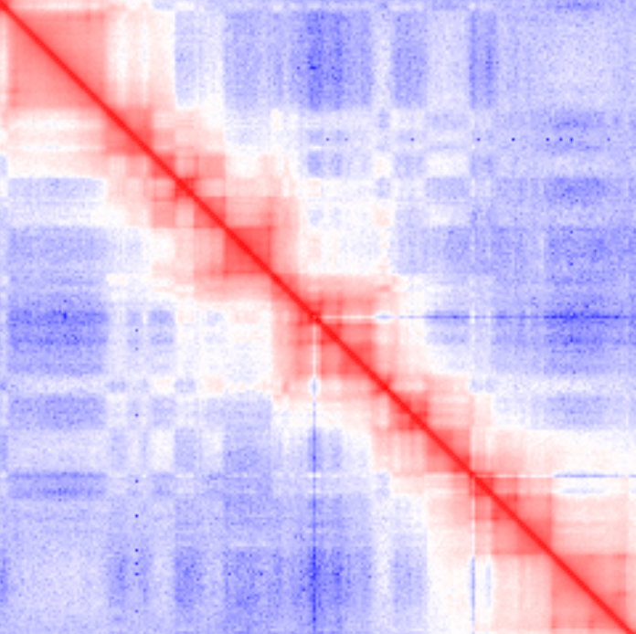 Bwr (blue white red) color map
-
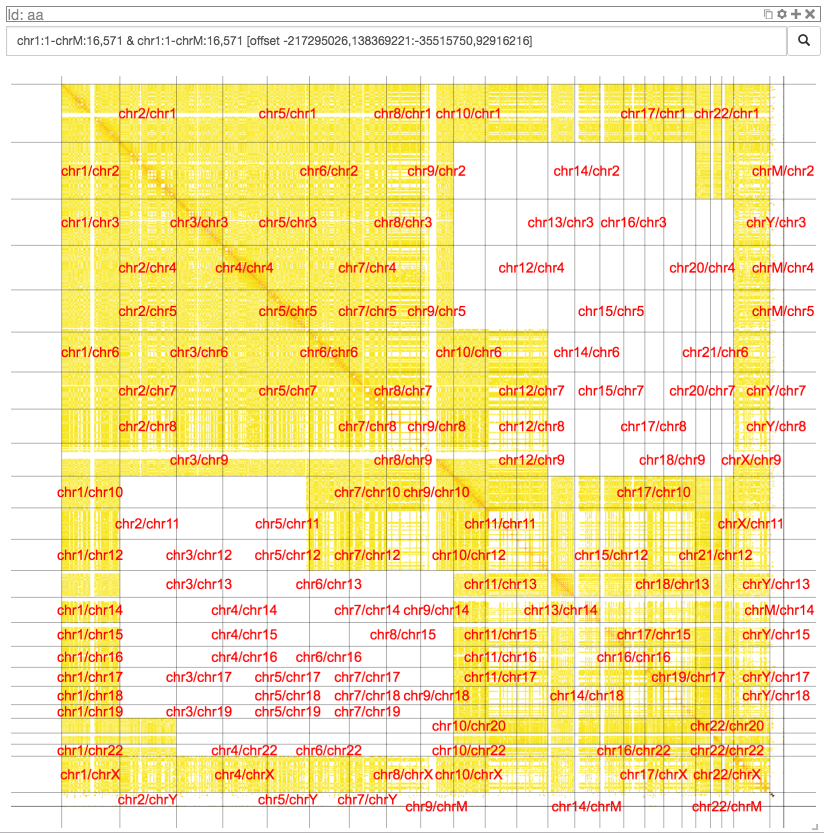 A dataset generated from a non-triangular matrix (Ma et al. 2015). (location: chr1:1-chrM:16,571 & chr1:1-chrM:16,571 [offset -217295026,138369221:-35515750,92916216]).